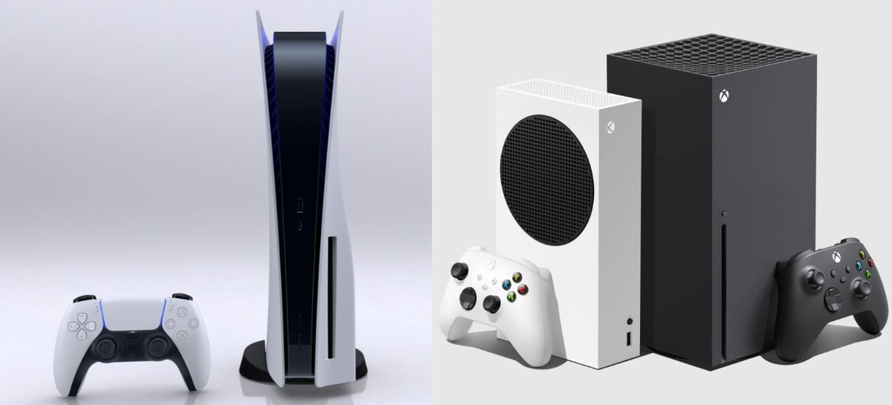

Casimiro Miguel: vaza faturamento do influenciador durante Copa do Mundo 2022; confira
Casimiro Miguel é um dos mais famosos influenciadores do momento. Graças ao seu trabalho competente e bem-sucedido na cobertura da Copa do Mundo no YouTube, está em alta. Porém, agora o assunto é outro: vazou quanto é faturado durante as suas transmissões do evento em Catar. Somente nos últimos 28 dias, foi arrecadada a quantia de R$ 830 mil, e o torneio ainda demorará para terminar. Os dados foram vazados na última quarta-feira (30), durante a partida entre Argentina e Polônia.
Ler mais
Call of Duty: Modern Warfare 2 estará grátis em dezembro
Um dos lançamentos de maior sucesso deste ano, Call of Duty: Modern Warfare 2 estará gratuito para ser jogado em dezembro. A Activision Blizzard revelou nesta semana que os jogadores que desejam descobrir um pouco mais do jogo terão a oportunidade de testá-lo se investir um real sequer.
Ler mais

Dois anos de PlayStation 5 e Xbox Series X|S: como está a atual geração?
Lançados em um dos piores momentos da história moderna, a nova geração de consoles está completando dois anos de vida. Com dois dias de diferença entre seus lançamentos, os novos consoles da Microsoft chegaram primeiro (10/11/2020), pelo menos em teoria, já que a disponibilidade do Xbox Series X|S e PlayStation 5, em escala mundial, demorou para normalizar. Os jogos continuaram a chegar e aqui vamos dar uma olhada no que as duas plataformas receberam nesses primeiros 24 meses e prometem para o futuro.
Ler mais